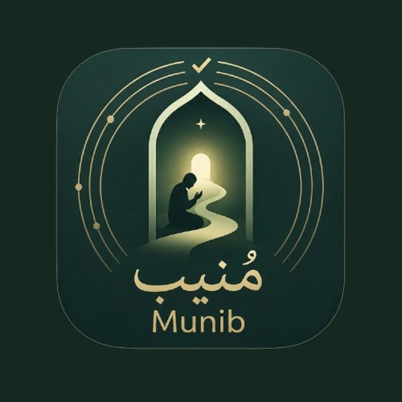
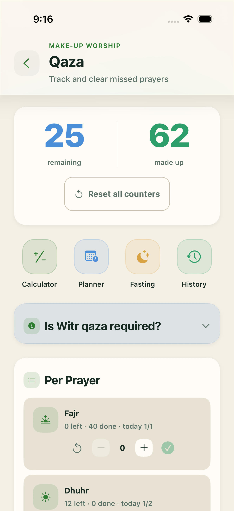
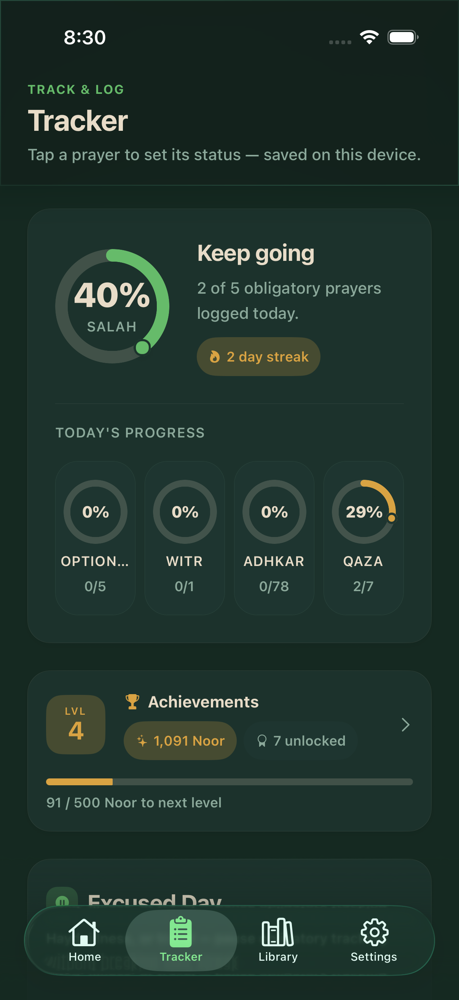

Munib Tracker· مُنيبNever lose count of what matters most.
Every fard, every missed Salah, every Tasbeeh — counted, remembered, and turned into steady progress you can see.


Salah tracker
Mark each fard Salah on time, late, missed or Qaza, plus Witr and Sunnah. Streaks, a calendar and “prayed at the Masjid”.
Qaza, made doable
Counters fed by missed Salah, a lifetime estimate, and a daily pace with an estimated finish date. Missed fasts too.
Tasbeeh, your way
Eight designs, your own targets, and an optional hands-free mode that counts the pauses between phrases — less accurate than tapping.
Adhkar with their sources
60 adhkar in seven categories with their source hadith, and guided sessions for morning, evening and after Salah.
Progress, never shame
Week, month and year statistics, a weekly report, and Noor devotion levels that never cap out.
Reminders on your terms
Adhan, adhkar, Qaza and Friday reminders — all off until you turn them on. Optional focus lock for Salah time.
Download free. No account needed.
Start as a guest — your data stays on your device. Sign in only if you want to sync across devices.